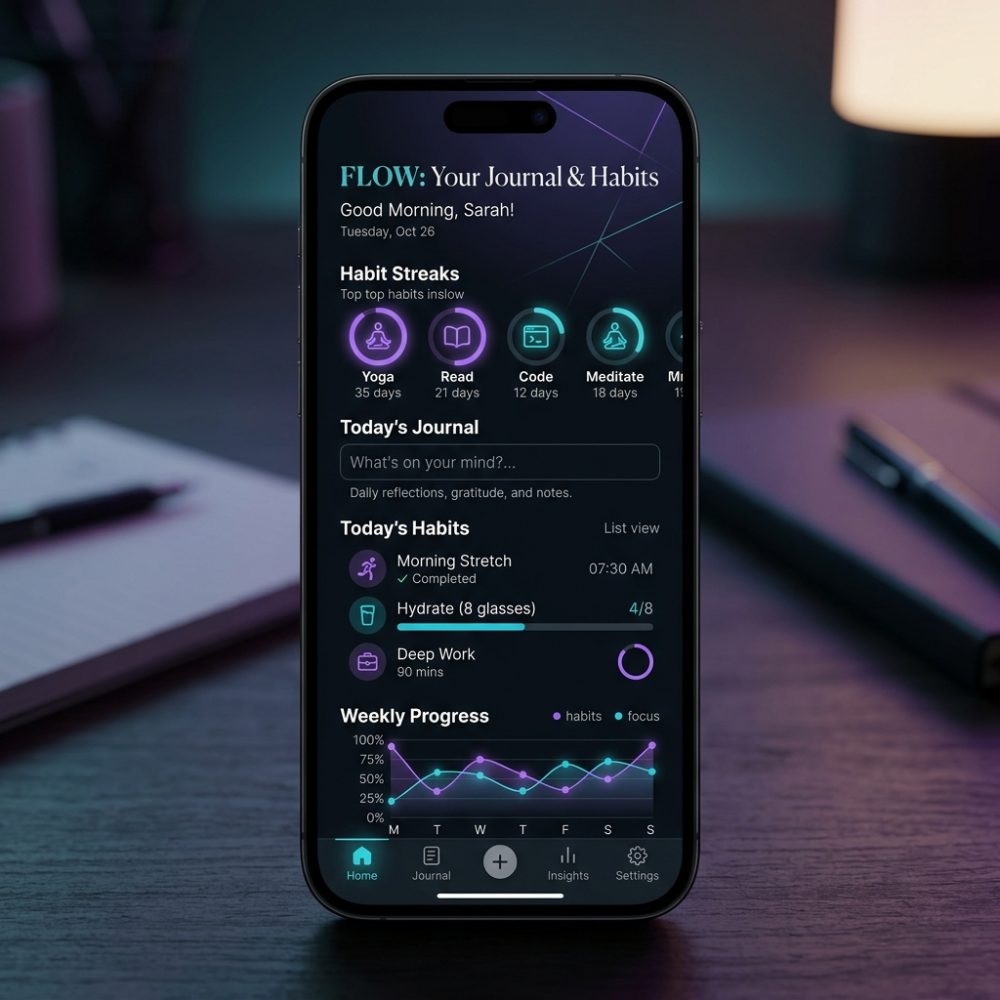

Hi, I'm Nandha
Kishore.
I build scalable, multi-threaded backend applications & REST APIs. Passionate about translating complex logic into real-world productivity solutions using Java, Spring Boot, and PostgreSQL.

Chapter I
About Me
I am a Software Developer specializing in core backend technologies. I have demonstrated expertise in Data Structures & Algorithms (DSA), object-oriented programming, and applying standard design patterns to architect robust, multi-tenant enterprise systems.
I actively focus on system design principles, aiming to write clean, maintainable code that scales. Beyond coding, I am an active open-source contributor and a content creator producing educational analyses of self-improvement literature.
Fast Facts
- Solved 300+ problems on LeetCode and HackerRank.
- CGPA of 9.19 in B.E. Computer Science and Engineering.
- Certified in GitHub Foundations and Docker.
- Open Source enthusiast with multiple clean-code Java projects.
Chapter II
Technical Arsenal
Languages
Technologies
Tools & DevOps
Architecture & Core
Chapter III
Featured Projects
Architectural blueprints and backend systems engineered for scalability,
security, and performance.
Mini SaaS Billing REST API
Mar 2026 - Jun 2026
- Architected a secure, multi-tenant SaaS REST API utilizing Spring Security for Role-Based Access Control (RBAC) and Hibernate Session Filters to ensure strict data isolation across corporate clients.
- Optimized system performance and response times by engineering asynchronous background PDF generation (Spring @Async, Thymeleaf) and resolving JPA "N+1" query issues via JOIN FETCH eager loading.
- Streamlined deployment and database management by automating schema migrations with Flyway and containerizing the PostgreSQL environment using Docker.
WealthWise Behavioral Finance Tracker
Jan 2026 - Feb 2026
- Developed a personal finance application to translate wealth-building principles into actionable metrics by tracking and categorizing income streams across functional quadrants.
- Engineered complex financial algorithms in Java, including a dynamic 'Fastlane Score' for financial independence, Future Value time-to-goal projections, and lifestyle inflation detection.
- Achieved strong user outcomes during beta testing (15 users), driving a 10x increase in savings rates for highly active users through algorithmic bucket recommendations.

Wisdom Journal & Habit Tracker
Dec 2025 - Jan 2026
- Developed a productivity application utilizing the MVC architecture and DAO design pattern to track habits, calculate streaks, and maintain daily journals.
- Engineered custom streak-calculation algorithms that handle dynamic scheduling and a real-time 'Habit Score' algorithm utilizing weighted averages over 30-day historical data.
- Deployed to 20+ active users, achieving an 85% reported improvement in productivity and successfully tracking user habit streaks exceeding 100 consecutive days.
Chapter IV
Education & Certifications
Academic Journey
B.E. in Computer Science and Engineering
Sep 2023 - May 2027
KPR Institute of Engineering and Technology, Coimbatore
CGPA: 9.19Higher Secondary Education
Jun 2021 - Apr 2023
Einsstein Matric Higher Secondary School, Namakkal
Percentage: 98.5%Certifications & Interests
GitHub Foundations
Issued by GitHub
Docker For Absolute Beginners
KodeKloud
Project Management
LinkedIn Learning
Content Creator
Producing educational video analyses of self-improvement books.